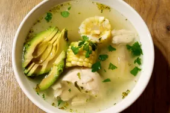

Pizza Recipe

Traditional Sancocho
Experience the rich and hearty flavors of Latin American cuisine with our
Traditional Sancocho recipe. This comforting stew is made with a variety
of meats, root vegetables, and spices, simmered to perfection to create a
flavorful and nourishing dish. Perfect for family gatherings or a cozy
meal at home, this sancocho will warm your heart and soul.
Ingredients
- 1 lb beef chuck, cut into chunks
- 1 lb chicken thighs, bone-in, skinless
- 1 lb pork ribs, cut into chunks
- 2 ears of corn, cut into thirds
- 2 green plantains, peeled and sliced
- 2 yuca roots, peeled and cut into chunks
- 2 carrots, peeled and sliced
- 2 potatoes, peeled and cut into chunks
- 1 onion, chopped
- 4 cloves garlic, minced
- 1 bell pepper, chopped
- 1/2 cup chopped cilantro
- 1 tablespoon ground cumin
- 1 tablespoon dried oregano
- 1 tablespoon paprika
- 8 cups beef or chicken broth
- Salt and pepper to taste
- Lime wedges for serving
Steps
-
In a large pot, heat a bit of oil over medium-high heat. Add the beef
chuck and pork ribs, browning them on all sides. Remove and set aside.
-
In the same pot, add the chicken thighs and brown them on all sides.
Remove and set aside with the other meats.
-
Add the chopped onion, garlic, and bell pepper to the pot. Sauté until
the vegetables are softened, about 5 minutes.
-
Return the browned meats to the pot and add the cumin, oregano, paprika,
salt, and pepper. Stir to coat the meats with the spices.
-
Pour in the beef or chicken broth and bring to a boil. Reduce the heat
to low, cover, and simmer for about 45 minutes.
-
Add the corn, green plantains, yuca, carrots, and potatoes to the pot.
Continue to simmer for another 45 minutes, or until the vegetables are
tender and the meats are cooked through.
-
Stir in the chopped cilantro and adjust the seasoning with salt and
pepper to taste.
-
Serve the sancocho hot with lime wedges on the side. Enjoy this hearty
and traditional Latin American stew!